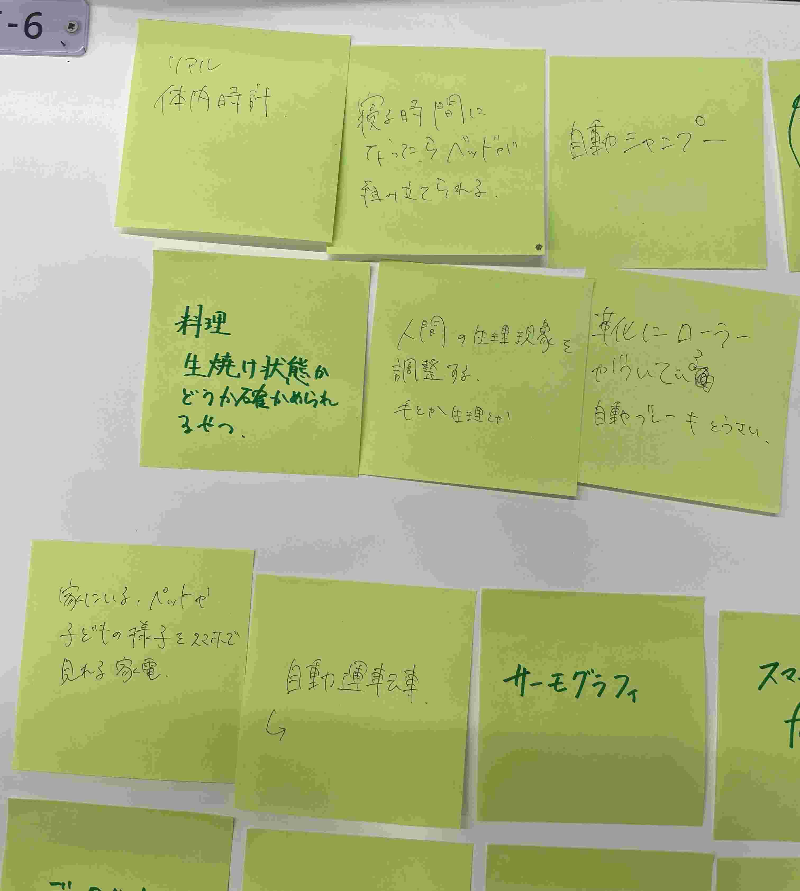
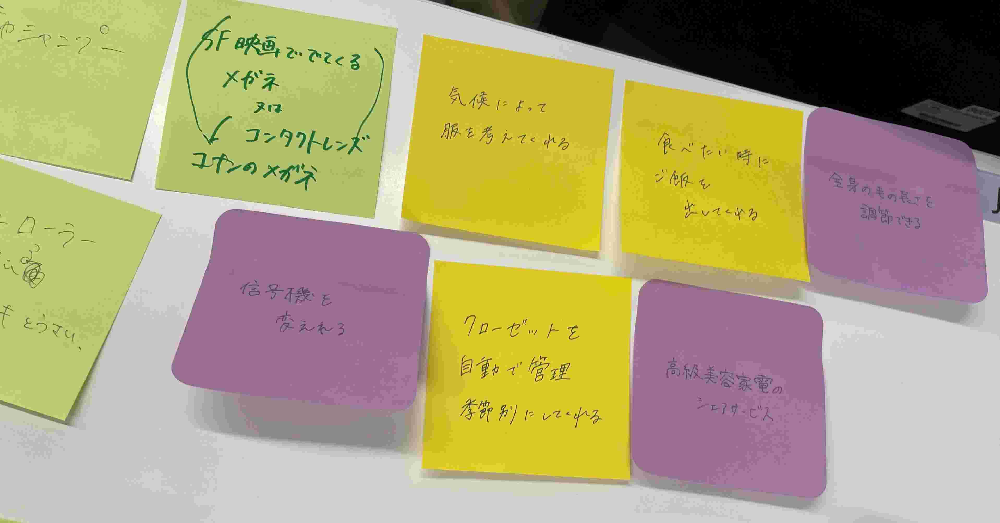
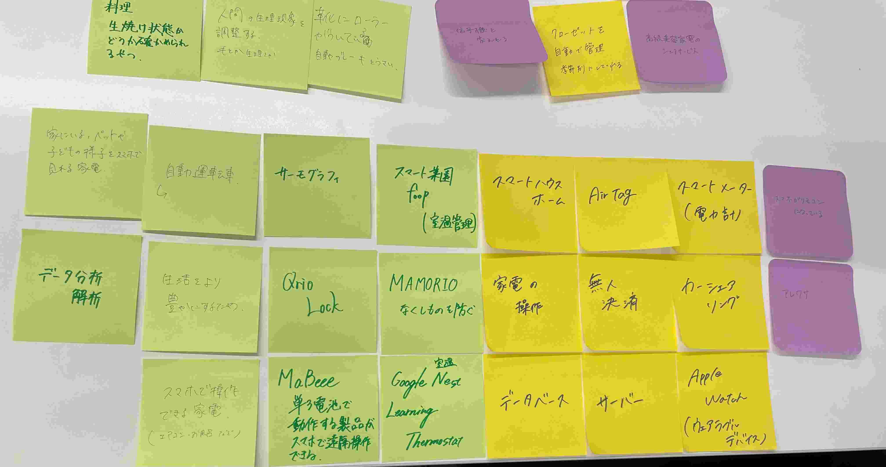

IoTとは
Internet of Things の略
家電や車、工場の製造ラインなどとインターネットを繋げ、データのやり取りをする技術
この技術を使用すると、スマートフォンから遠隔で対象物を操作できる
また、データの貯蓄があるため、分析が可能となる AI
IoTの具体例

2023．04．10 水口

_
2023．04．10 水口

2023．04．10 水口
特に単三電池型IoTの技術に興味がある。
IoTのアイディア
2023．04．10 水口
デザイン演習Ⅲ・Ⅳトップページ